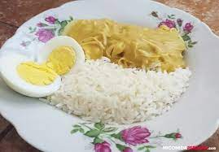

Pagina principal
Aji de Gallina

Un rico aji de gallina casero
Ingredientes
Pechuga de pollo
Aji escabeche
Papa
Preparacion
Sancochar la pechuga de pollo
Cortar y sobreir el escabeche
Sancochar la papa
Aderezar el pollo deshilachado